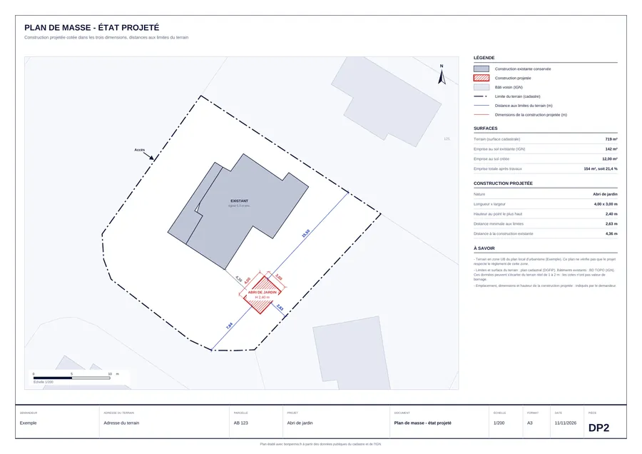

Votre plan de masse en 2 minutes
Tapez votre adresse. Posez votre projet. Les distances se calculent toutes seules.
Chargement…
Aperçu gratuit · PDF prêt à déposer 29 € · Plan de situation gratuit

Un seul détail peut faire refuser votre dossier.
Chaque mairie a son règlement. Il est différent partout.
- Une clôture trop haute
- Un abri trop près du voisin
- Une couleur de tuiles interdite
L'outil dessine votre plan. Il ne lit pas le règlement de votre mairie. Nous, si : c'est le plan vérifié à 79 € et le dossier complet.
Faire vérifier mon projetTrois formules
Le plan de masse
Plan de masse coté et plan de situation, en PDF, tout de suite. Ne dit pas si votre projet est autorisé.
Le plan vérifié
Le plan, et on vérifie les règles de votre mairie : votre projet passe ou non. Réponse sous 48 h ouvrées.
Le dossier complet
Règles de votre mairie vérifiées, tous les plans d'après votre croquis, le formulaire. Prêt en 48 h.
Voir mon prixCe que vous avez payé est déduit de la formule au-dessus pendant 30 jours. Le plan de situation seul est gratuit.

Ce que vous recevez
- Votre terrain et les voisins
- La maison et les constructions existantes
- Votre projet : longueur, largeur, hauteur
- Les distances aux limites, calculées
- L'accès, le nord, l'échelle
- Les surfaces et la part du terrain bâtie
- Le plan de situation, en page 2
Il met votre projet au propre. Pour savoir s'il est autorisé avant de déposer : le plan vérifié ou le dossier complet.
Limites d'après le cadastre, sans valeur de bornage. Plan de masse exigé par le code de l'urbanisme : article R. 431-36 b pour une déclaration préalable, article R. 431-9 pour un permis de construire. Mis à jour le 11 novembre 2026.
Questions fréquentes
Qu'est-ce qu'un plan de masse ?
C'est le terrain vu du dessus, à l'échelle : ses limites, les constructions qui existent, celle que vous voulez ajouter, avec ses dimensions et ses distances aux limites. C'est la pièce n° 2 du dossier (DP2 pour une déclaration préalable, PCMI2 pour un permis de construire).
Que veut dire « coté dans les trois dimensions » ?
Le plan doit donner la longueur, la largeur et la hauteur de la construction. Les deux premières se lisent sur le dessin, la hauteur est écrite à côté. C'est le code de l'urbanisme qui le demande (articles R. 431-9 et R. 431-36).
Ce plan suffit-il pour déposer ma déclaration préalable ?
Non. Vous avez deux pièces sur huit : le plan de masse et le plan de situation. Il faut aussi le formulaire officiel, le plan en coupe, les façades, l'insertion du projet et deux photos. Et il faut que le projet respecte le règlement de votre commune, ce que ce plan ne vérifie pas.
Le plan de situation est-il vraiment gratuit ?
Oui. Il a sa propre page : vous tapez votre adresse, vous donnez votre e-mail, vous recevez le PDF. Il est aussi inclus en deuxième page du plan de masse.
Que vérifiez-vous, dans le plan vérifié ?
Une personne de notre équipe lit le règlement de votre mairie en entier, puis vérifie votre projet règle par règle : distances, hauteur, part du terrain bâtie, aspect. Vous recevez la réponse par e-mail sous 48 h ouvrées. C'est la mairie qui décide en dernier.
D'où viennent les limites de mon terrain ?
Du plan cadastral, et les bâtiments de la base de données de l'IGN. Ces données publiques peuvent s'écarter du terrain réel de 1 à 2 mètres. Le plan le précise : les cotes n'ont pas valeur de bornage. Si une distance est juste, à quelques centimètres près, seul un géomètre peut la garantir.
Pourquoi un plan juste peut-il être refusé ?
Parce que la mairie ne juge pas le dessin : elle compare votre projet au PLU, le règlement de votre commune. Un exemple réel, à Tarnos dans les Landes, en zone U40.9 : pas de mur plein en clôture, alors qu'il est admis dans les communes voisines, et pas plus de 40 % du terrain bâti, constructions existantes comprises. Un outil automatique, le nôtre compris, ne lit pas ce règlement à votre place.
Et si je préfère que vous fassiez tout ?
C'est notre dossier complet : on vérifie les règles de votre mairie, on trace tous les plans à partir de votre croquis, on remplit le formulaire. Le prix du plan de masse est déduit pendant 30 jours.